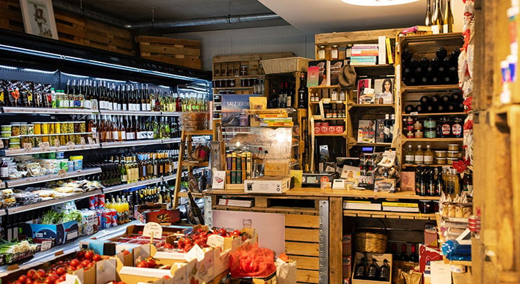
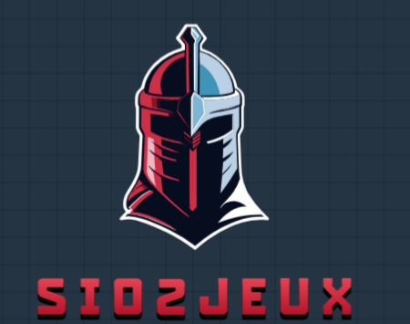
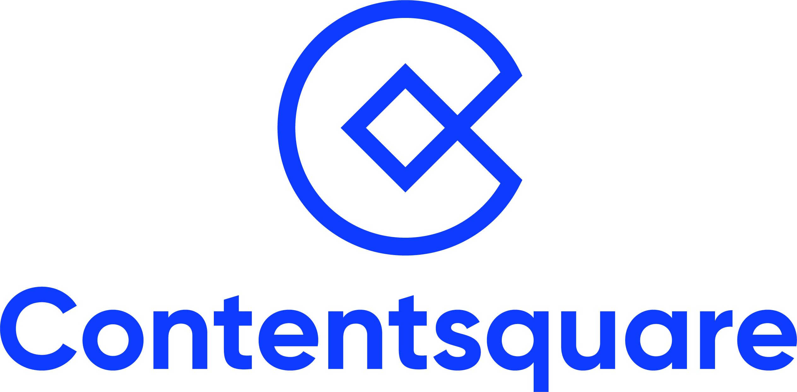

À Propos
Présentation
Salut, moi c'est Deniz Sarigul.
Je suis actuellement étudiant au Lycée Parc des Loges à Évry-Courcouronnes en deuxième année de BTS SIO (Services Informatiques aux Organisations), dans l'option SLAM (Solutions Logicielles et Applications Métiers), spécialisée dans le développement.
je vous propose sur ce portfolio de retrouver ci-dessous les différentes études, et projet professionnel que j'ai pu entreprendre au sein de ma carrière.
Vous retrouverez ci-dessus mon CV !
Mon parcours 🎓
Mes formations
BTS SIO (SLAM)
2023 - 2025
Lycée Parc des Loges - Évry
Baccalauréat STMG
2020 - 2023
Lycée Jean-Baptiste-Corot - Savigny-sur-Orge(91)
Brevet des collèges
2020
Collège Pablo Neruda - Grigny(91)
Mes expériences professionnelles 💼
Stage chez Elia-Expert
13 janvier au 15 février 2025
18 Boulevard Gallieni - Gennevilliers (92)
Stage chez Contentsquare
13 mai au 27 juin 2024
7 rue de Madrid - Paris (75)
Qu'est-ce que le BTS SIO ? 🎓
Ma formation actuelle
Mes Compétences techniques 👨💻 :
Mes Langages Pratiqués

HTML
Langage utilisé pour structurer les pages web.

CSS
Langage de mise en forme pour styliser les pages web.

PHP
Langage de programmation côté serveur pour créer des sites dynamiques.

Java
Langage puissant et polyvalent utilisé en entreprise et dans les applications Android.

Python
Langage polyvalent utilisé en IA, data science et développement web.

Go
Langage rapide et efficace, conçu par Google.

SQL
Langage utilisé pour interagir avec les bases de données.

JavaScript
Langage utilisé pour dynamiser les sites web et créer des applications interactives.
Mes Outils et Logiciels ⚙️ :

CodeIgniter 4
Framework PHP léger pour développer des applications web.

Oracle VM VirtualBox
Logiciel de virtualisation permettant de tester des OS.
FileZilla
Client FTP permettant de transférer des fichiers vers un serveur.

Eclipse IDE
Environnement de développement intégré pour Java.

VS Code
Éditeur de code léger et puissant, utilisé pour plusieurs langages.

Wamp
Serveur local permettant de tester des sites PHP/MySQL.

Github
Plateforme de gestion de version et de collaboration pour les développeurs.

phpMyAdmin
Interface web pour gérer facilement des bases de données MySQL.
Mes Projets
Application Java Fripouilles
Application Java de gestion du catalogue des ventes éphémères
Langage : Java/SQL
En savoir plusApplication Web EPI’Solidaire
Application de gestion d’une épicerie solidaire
Langages : HTML/CSS/PHP/SQL
Application Java Sio2Jeux
Application de gestion de bibliothèque de jeux vidéo
Langages : Java/SQL
En savoir plusStage chez Elia-Expert
Plusieurs scripts d'automatisation
Langages : Sql/PHP/Javascript
En savoir plusStage chez Contentsquare
Implémentation d'une requête SQL dans un script en GO
Langages : Sql/GO
En savoir plusSite Web Marchand WoodandChic
Site Marchand de Noeuds Papillon en Bois
Langages : HTML/CSS/PHP/SQL
En savoir plusVeilles Technologique
Veille Technologique : L'Intelligence Artificielle dans la Musique
Découvrez les derniers articles et avancées sur l'impact de l'IA dans l'industrie musicale.
| Titre de l'Article | Date | Détails |
|---|---|---|
| Musique et Intelligence Artificielle : un bras de fer décisif ! | Publié le 21 janvier 2025 par LinkaBand | Lire l'Article |
| Intelligence artificielle en musique: l’IA ne pourra pas remplacer nos vedettes et nos émotions | Publié le 14 juillet 2024 par le Journal de Montréal | Lire l'article |
| Plus de 200 artistes alertent sur « une utilisation prédatrice » de l’intelligence artificielle dans la musique | Publié le 03 avril 2024 par Le Monde | Lire l'article |
| Intelligence artificielle et musique: révolution créative ou amélioration des outils de production ? | Publié le 25 Mars 2024 par RFI | Lire l'article |
| Musique et intelligence artificielle : liaisons heureuses ou dangereuses ? | Publié le jeudi 1 février 2024 par Radio France | Lire l'article |
| Une chanson générée par l’intelligence artificielle suscite la polémique aux Grammys | Publié le 8 Septembre 2023 par CAPITAL | Lire l'article |
| Intelligence artificielle : l'industrie musicale entre peur et intérêt face au développement de la technologie | Publié le 1 Septembre 2023 par FRANCE INFOS | Lire l'article |
| Titre de l'article :Beatles morts, faux Drake et auteurs-compositeurs robots : au cœur de la panique face à la musique IA ? | Publié le 6 Juillet 2023 par LOS ANGELES TIMES | Lire l'article |
Certifications
Voici les certifications que j'ai obtenues :